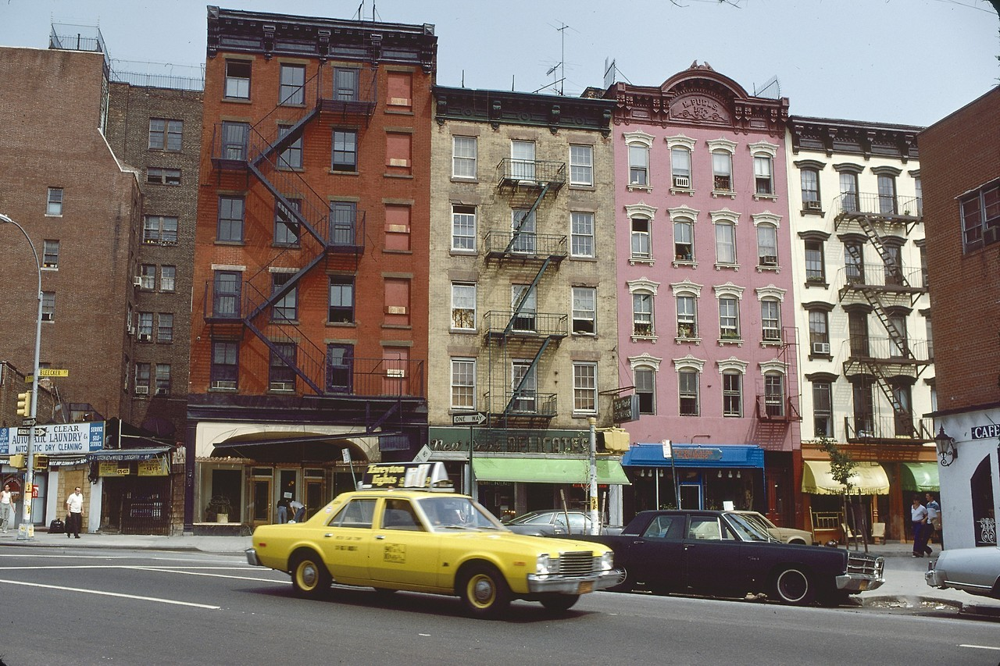

Seventh Avenue at Bleecker Street, 1979; photo by Peter van Wijk
This is one of several photos featured in an Ephemeral New York blog post of Mr van Wijk’s shots of NYC when he was a visiting Dutch sailor wandering the streets with his camera. A selection of ten photos is at the link, sharp & high-res enough that I could easily read the street signs in the above pic.